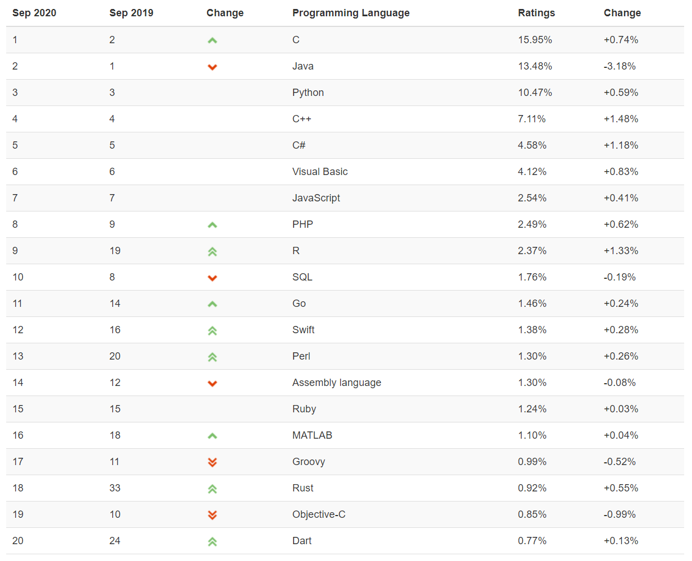
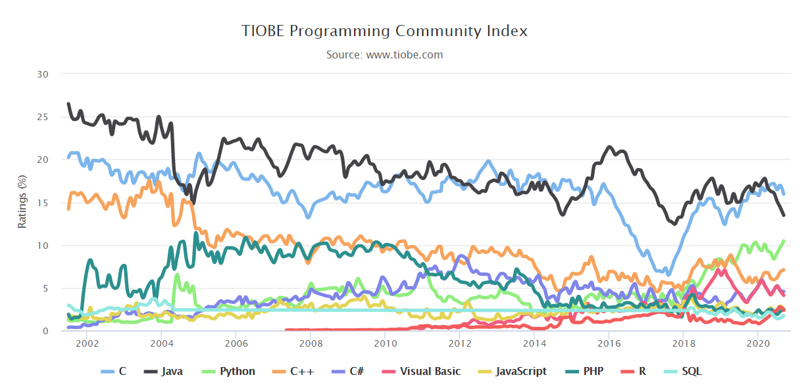

<!DOCTYPE HTML>
<html lang="zh-CN">
<head><meta name="generator" content="Hexo 3.8.0">
    <!--Setting-->
    <meta charset="UTF-8">
    <meta name="viewport" content="width=device-width, user-scalable=no, initial-scale=1.0, maximum-scale=1.0, minimum-scale=1.0">
    <meta http-equiv="X-UA-Compatible" content="IE=Edge,chrome=1">
    <meta http-equiv="Cache-Control" content="no-siteapp">
    <meta http-equiv="Cache-Control" content="no-transform">
    <meta name="renderer" content="webkit|ie-comp|ie-stand">
    <meta name="apple-mobile-web-app-capable" content="我的博客 - blog">
    <meta name="apple-mobile-web-app-status-bar-style" content="black">
    <meta name="format-detection" content="telephone=no,email=no,adress=no">
    <meta name="browsermode" content="application">
    <meta name="screen-orientation" content="portrait">
    <link rel="dns-prefetch" href="https://lives.xtcgch.ink">
    <!--SEO-->

<meta name="description" content="脑容量不够，笔记来凑">


<meta name="robots" content="all">
<meta name="google" content="all">
<meta name="googlebot" content="all">
<meta name="verify" content="all">
    <!--Title-->


<title>编程语言之C++版本变化汇总 | 我的博客 - blog</title>


    <link rel="alternate" href="/atom.xml" title="我的博客 - blog" type="application/atom+xml">


    <link rel="icon" href="https://blog.xtcgch.ink/img/background/海绵宝宝.ico">

    


<link rel="stylesheet" href="/css/bootstrap.min.css?rev=3.3.7">
<link rel="stylesheet" href="/css/font-awesome.min.css?rev=4.5.0">
<link rel="stylesheet" href="/css/style.css?rev=@@hash">


    


    

</head>

</html>
<!--[if lte IE 8]>
<style>
    html{ font-size: 1em }
</style>
<![endif]-->
<!--[if lte IE 9]>
<div style="ie">你使用的浏览器版本过低，为了你更好的阅读体验，请更新浏览器的版本或者使用其他现代浏览器，比如Chrome、Firefox、Safari等。</div>
<![endif]-->

<body>
    <header class="main-header" style="background-image:url(https://blog.xtcgch.ink/img/head-bg.jpg)">
    <div class="main-header-box">
        <a class="header-avatar" href="/" title="unistd68">
            
        </a>
        <div class="branding">
        	<!--<h2 class="text-hide">Snippet主题,从未如此简单有趣</h2>-->
            
                <h2> 脑容量不够，笔记来凑 </h2>
            
    	</div>
    </div>
</header>
    <nav class="main-navigation">
    <div class="container">
        <div class="row">
            <div class="col-sm-12">
                <div class="navbar-header"><span class="nav-toggle-button collapsed pull-right" data-toggle="collapse" data-target="#main-menu" id="mnav">
                    <span class="sr-only"></span>
                        <i class="fa fa-bars"></i>
                    </span>
                    <a class="navbar-brand" href="https://lives.xtcgch.ink">我的博客 - blog</a>
                </div>
                <div class="collapse navbar-collapse" id="main-menu">
                    <ul class="menu">
                        
                            <li role="presentation" class="text-center">
                                <a href="/"><i class="fa "></i>主页</a>
                            </li>
                        
                            <li role="presentation" class="text-center">
                                <a href="/categories/原理/"><i class="fa "></i>原理</a>
                            </li>
                        
                            <li role="presentation" class="text-center">
                                <a href="/categories/实战/"><i class="fa "></i>实战</a>
                            </li>
                        
                            <li role="presentation" class="text-center">
                                <a href="/categories/开源/"><i class="fa "></i>开源</a>
                            </li>
                        
                            <li role="presentation" class="text-center">
                                <a href="/categories/其他/"><i class="fa "></i>其他</a>
                            </li>
                        
                            <li role="presentation" class="text-center">
                                <a href="/archives/"><i class="fa "></i>时间轴</a>
                            </li>
                        
                    </ul>
                </div>
            </div>
        </div>
    </div>
</nav>
    <section class="content-wrap">
        <div class="container">
            <div class="row">
                <main class="col-md-8 main-content m-post">
                    <p id="process"></p>
<article class="post">
    <div class="post-head">
        <h1 id="编程语言之C++版本变化汇总">
            
	            编程语言之C++版本变化汇总
            
        </h1>
        <div class="post-meta">
    
    
    <span class="categories-meta fa-wrap">
        <i class="fa fa-folder-open-o"></i>
        <!-- <a href="https://blog.xtcgch.ink/categories/原理"> -->
        <a href="/categories/原理">
            原理
        </a>
    </span>
    

    
    <span class="fa-wrap">
        <i class="fa fa-tags"></i>
        <span class="tags-meta">
            
                
                    <!-- <a href="https://blog.xtcgch.ink/tags/C++" title='C++'> -->
                    <a href="/tags/C++" title="C++">
                        C++
                    </a>
                
            
        </span>
    </span>
    

    
        
        <span class="fa-wrap">
            <i class="fa fa-clock-o"></i>
            <span class="date-meta">2020/11/30</span>
        </span>
        
    
</div>

            
            
            <p class="fa fa-exclamation-triangle warning">
                本文于<strong>367</strong>天之前发表，文中内容可能已经过时。
            </p>
        
    </div>
    
    <div class="post-body post-content">
        <p><strong>摘要：</strong>记录C++各版本之间的演变。</p>
<a id="more"></a>
<hr>
<h2 id="前言"><a href="#前言" class="headerlink" title="前言"></a><table><tr><td bgcolor="#C7C7C7">前言</td></tr></table></h2><ol>
<li><strong>如何定义新增特性和改进特性？</strong></li>
</ol>
<blockquote>
<p>如果一个特性改变了我们对代码和软件开发的看法，那么我认为它就是一个主要的特性。</p>
</blockquote>
<hr>
<h2 id="C-和G-版本的对应关系"><a href="#C-和G-版本的对应关系" class="headerlink" title="C++和G++版本的对应关系"></a><table><tr><td bgcolor="#C7C7C7"><strong>C++和G++版本的对应关系</strong></td></tr></table></h2><p>C++17：<br>    gcc7完全支持，gcc6和gcc5部分支持，gcc6支持度当然比gcc5高，gcc4及以下版本不支持。<br>C++14:<br>    gcc5就可以完全支持，gcc4部分支持，gcc3及以下版本不支持。<br>C++11：<br>    gcc4.8.1及以上可以完全支持。gcc4.3部分支持，gcc4.3以下版本不支持。</p>
<hr>
<h2 id="C98"><a href="#C98" class="headerlink" title="C98"></a><table><tr><td bgcolor="#C7C7C7"><strong>C98</strong></td></tr></table></h2><hr>
<h2 id="C03"><a href="#C03" class="headerlink" title="C03"></a><table><tr><td bgcolor="#C7C7C7">C03</td></tr></table></h2><hr>
<h2 id="C11"><a href="#C11" class="headerlink" title="C11"></a><table><tr><td bgcolor="#C7C7C7"><strong>C11</strong></td></tr></table></h2><h3 id="关键点"><a href="#关键点" class="headerlink" title="关键点"></a><font color="#0000FF">关键点</font></h3><ul>
<li>修改<ul>
<li>智能指针</li>
<li></li>
<li></li>
</ul>
</li>
<li>新增<ul>
<li>lambda</li>
<li></li>
</ul>
</li>
</ul>
<h3 id="具体介绍"><a href="#具体介绍" class="headerlink" title="具体介绍"></a><font color="#0000FF">具体介绍</font></h3><ol>
<li>智能指针</li>
</ol>
<ul>
<li>weak_ptr</li>
</ul>
<p>删除了<code>weak_ptr</code>弱指针</p>
<ul>
<li>shared_ptr</li>
</ul>
<p>新增了<code>shared_ptr</code>共享指针</p>
<ol start="2">
<li>lambda表达式</li>
</ol>
<hr>
<h2 id="C14"><a href="#C14" class="headerlink" title="C14"></a><table><tr><td bgcolor="#C7C7C7">C14</td></tr></table></h2><hr>
<h2 id="C17"><a href="#C17" class="headerlink" title="C17"></a><table><tr><td bgcolor="#C7C7C7">C17</td></tr></table></h2><hr>
<h2 id="C20"><a href="#C20" class="headerlink" title="C20"></a><table><tr><td bgcolor="#C7C7C7"><strong>C20</strong></td></tr></table></h2><h3 id="关键点-1"><a href="#关键点-1" class="headerlink" title="关键点"></a><font color="#0000FF">关键点</font></h3><ul>
<li>修改<ul>
<li>概念：对范式编程中接口的精确规范，旨在提升范式编程的易行性与灵活性</li>
<li>模块：将代码编译速度大为提高（比如说快 5 倍以上）</li>
<li>并发编程</li>
</ul>
</li>
<li>新增<ul>
<li>范围</li>
<li>概念与约束</li>
<li>指定初始化</li>
<li>计时</li>
<li>并行算法</li>
</ul>
</li>
</ul>
<h3 id="具体介绍-1"><a href="#具体介绍-1" class="headerlink" title="具体介绍"></a><font color="#0000FF">具体介绍</font></h3><hr>
<h2 id="每年编程语言排名和趋势"><a href="#每年编程语言排名和趋势" class="headerlink" title="每年编程语言排名和趋势"></a><font color="#0000FF">每年编程语言排名和趋势</font></h2><ul>
<li>截至2020年09月</li>
</ul>
<p><strong>排名：</strong></p>
<p></p>
<p><strong>趋势：</strong></p>
<p></p>
<hr>

    </div>
    
    <div class="post-footer">
        <div>
            
        </div>
        <div>
            
        </div>
    </div>
</article>

<div class="article-nav prev-next-wrap clearfix">
    
        <a href="/2020/12/01/开源之protobuf/" class="pre-post btn btn-default" title="开源之protobuf">
            <i class="fa fa-angle-left fa-fw"></i><span class="hidden-lg">上一篇</span>
            <span class="hidden-xs">开源之protobuf</span>
        </a>
    
    
        <a href="/2020/11/30/markdown语法/" class="next-post btn btn-default" title="markdown语法">
            <span class="hidden-lg">下一篇</span>
            <span class="hidden-xs">markdown语法</span><i class="fa fa-angle-right fa-fw"></i>
        </a>
    
</div>


    <div id="comments">
        
    
    <div id="vcomments" class="valine"></div>
    <script src="//cdn1.lncld.net/static/js/3.0.4/av-min.js"></script>
<script src="/assets/valine.min.js"></script>

    <script>
        new Valine({
            av: AV,
            el: '#vcomments',
            appId: 'XWA5gq7VCJybw7YQhf5HG20r-gzGzoHsz',
            appKey: '8FW1WEwrysHXaUD1bhGn2Rp8',
            placeholder: '说点什么吧',
            notify: true,
            verify: false,
            avatar: 'https://blog.xtcgch.ink/img/comment-avatar.jpg',
            meta: 'nick,mail'.split(','),
            pageSize: '10',
            path: window.location.pathname,
            lang: 'zh-CN'.toLowerCase()
        })
    </script>


    </div>


                </main>
                
                    <aside id="article-toc" role="navigation" class="col-md-4">
    <div class="widget">
        <h3 class="title">文章目录</h3>
        
            <ol class="toc"><li class="toc-item toc-level-2"><a class="toc-link" href="#前言"><span class="toc-text">前言</span></a></li><li class="toc-item toc-level-2"><a class="toc-link" href="#C-和G-版本的对应关系"><span class="toc-text">C++和G++版本的对应关系</span></a></li><li class="toc-item toc-level-2"><a class="toc-link" href="#C98"><span class="toc-text">C98</span></a></li><li class="toc-item toc-level-2"><a class="toc-link" href="#C03"><span class="toc-text">C03</span></a></li><li class="toc-item toc-level-2"><a class="toc-link" href="#C11"><span class="toc-text">C11</span></a><ol class="toc-child"><li class="toc-item toc-level-3"><a class="toc-link" href="#关键点"><span class="toc-text">关键点</span></a></li><li class="toc-item toc-level-3"><a class="toc-link" href="#具体介绍"><span class="toc-text">具体介绍</span></a></li></ol></li><li class="toc-item toc-level-2"><a class="toc-link" href="#C14"><span class="toc-text">C14</span></a></li><li class="toc-item toc-level-2"><a class="toc-link" href="#C17"><span class="toc-text">C17</span></a></li><li class="toc-item toc-level-2"><a class="toc-link" href="#C20"><span class="toc-text">C20</span></a><ol class="toc-child"><li class="toc-item toc-level-3"><a class="toc-link" href="#关键点-1"><span class="toc-text">关键点</span></a></li><li class="toc-item toc-level-3"><a class="toc-link" href="#具体介绍-1"><span class="toc-text">具体介绍</span></a></li></ol></li><li class="toc-item toc-level-2"><a class="toc-link" href="#每年编程语言排名和趋势"><span class="toc-text">每年编程语言排名和趋势</span></a></li></ol>
        
    </div>
</aside>

                
            </div>
        </div>
    </section>
    <footer class="main-footer">
    <div class="container">
        <div class="row">
        </div>
    </div>
</footer>

<a id="back-to-top" class="icon-btn hide">
	<i class="fa fa-chevron-up"></i>
</a>


    <div class="copyright">
    <div class="container">
        <div class="row">
            <div class="col-sm-12">
                <div class="busuanzi">
    
</div>

            </div>
            <div class="col-sm-12">
                <span>Copyright &copy; 2018
                </span> |
                <span>
                    Powered by <a href="//hexo.io" class="copyright-links" target="_blank" rel="nofollow">Hexo</a>
                </span> |
                <span>
                    Theme by <a href="//github.com/shenliyang/hexo-theme-snippet.git" class="copyright-links" target="_blank" rel="nofollow">Snippet</a>
                </span>
            </div>
        </div>
    </div>
</div>


<script src="/js/app.js?rev=@@hash"></script>

</body>
</html>